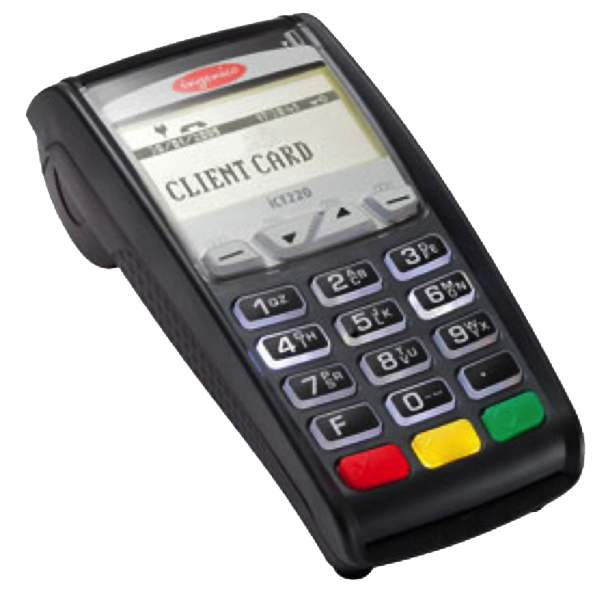
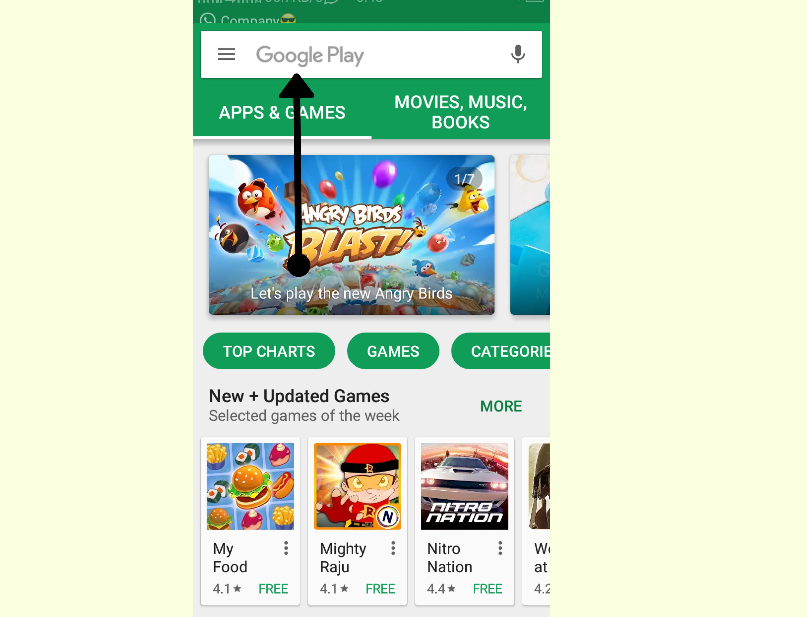

नागरिकांना डिजिटल व्यवहाराबाबत संपूर्ण माहिती देणे आणि त्यांना डिजिटल व्यवहार करण्यासाठी सक्षम बनविणे, हा या संकेतस्थळाचा प्रमुख उद्देश्य आहे. सोप्या भाषेमध्ये डिजिटल व्यवहारांच्या विविध प्रकारांबद्दल मार्गदर्शन करण्याचा प्रयत्न केला आहे. याचा वापर करून आपण यशस्वीपणे डिजिटल व्यवहार करू शकाल.
aeps
##AADHAR
बँक प्रतिनिधी किंवा Micro-ATM च्या माध्यमातून व्यवहार करण्याची सुविधा आधार प्रणित प्रणालीद्वारे मिळते.
AEPS चा लाभ घेण्यासाठी, आपले आधार कार्ड बँकेच्या खात्याशी संलग्न असायला हवे.
या प्रणाली मार्फत व्यवहार करताना आपल्याला कोणतेही पासवर्ड लक्षात ठेवायची गरज नाही.
प्रणाली मार्फत मिळणाऱ्या सेवा
खात्यांवरील रकमेची चौकशी
रक्कम काढणे
रक्कम भरणे
आधार ते आधार रक्कम ट्रान्सफर
आधार प्रणित प्रणालीमध्ये व्यवहार कसा कराल ?
आपल्या नजीकच्या Micro-ATM किंवा बँक प्रतिनिधीला भेट द्या.
आपल्या बँकेचे नाव आणि आधार कार्ड नंबर सांगा.
जो व्यवहार करायचा आहे तो निवडा.
४. स्कॅनरवर आपले फिंगरप्रिंट स्कॅन करा.
५. व्यवहार पूर्ण झाल्यावर आपल्याला व्यवहाराची पावती मिळेल.
mpos
MPOS म्हणजे Mobile Point of Sale मशीन. हि मशीन आपण आपल्या मोबाईलला जोडतो आणि मोबाईलच्या इंटरनेटच्या माध्यमातून या मशीनद्वारे व्यवहार करण्यात येतात. POS मशीनपेक्षा MPOS साठी लागणारा खर्च खूप कमी आहे.
M-POS मशीनसाठी लागणारा खर्च :
मशीनसाठी द्यावे लागणारे डिपॉझिट
मशीन वापरण्यासाठी लागणारे मासिक भाडे
प्रत्येक व्यवहारामागे कमिशन
आवश्यक कागदपत्रे
पॅन कार्ड
cancelled (रद्द) चेक / बँक पासबुक कॉपी
संपर्क
MPOS मशिन घेण्यासाठी किंवा त्याबद्दल अधिक माहितीसाठी आपण खालील क्रमांकावर संपर्क करू शकता.
PayU Money : 9069145265
MSwipe : 1800 1022 699
PayNear : 1800 1236 327
Bijlipay : 1800 2744 300
pos

POS म्हणजे Point of Sale मशीन. POS मशीनचा वापर पेमेंट कार्डमार्फत पेमेंट स्वीकारण्यासाठी होतो.
खर्च
POS मशीनसाठी लागणारा खर्च :
मशीनसाठी द्यावे लागणारे डिपॉझिट
मशीन वापरण्यासाठी लागणारे मासिक भाडे
प्रत्येक व्यवहारामागे कमिशन
टीप : POS मशीनला स्वतःचे इंटरनेट कनेक्शन असते (यासाठी कोणतेही अधिक शुल्क आकारले जात नाही).
आवश्यक कागदपत्रे
व्यवसायचा पुरावा (कोणताही एक)
व्यवसाय व स्थापना नोंदणी प्रमाणपत्र
व्हॅट प्रमाणपत्र
विक्री कर
निवासाचा पुरावा
व्यवसायचालकाचे/भागीदाराचे फोटो ओळखपत्र
आर्थिक तपशील
बँक स्टेटमेंट
आयकर रिटर्न
टीप : जर आपले बँकेचे खाते त्याच बँकेत असेल जी आपल्याला POS मशीन देत आहे, तर वरीलपैकी बऱ्याच कागदपत्रांची आवश्यकता लागणार नाही.
संपर्क
POS मशिन घेण्यासाठी किंवा त्याबद्दल अधिक माहितीसाठी आपण खालील क्रमांकावर संपर्क करू शकता.
Union Bank of India : 1800 208 2244
ICICI Bank : 7304446699
Bank of Maharashtra : 1800-102-2636
SBI : 1800 425 0727
Net Banking
बँकेत न जाता इंटरनेटचा वापर करून व्यवहार करण्याच्या सुविधेला “नेट बँकिंग” असे म्हणतात.
बँकेत न जाता इंटरनेटचा वापर करून व्यवहार करण्याच्या सुविधेला “नेट बँकिंग” असे म्हणतात.
मी नेट बँकिंग का वापरावी ?
नेट बँकिंगची सुविधा २४*७ उपलब्ध असते.
व्यवहार करण्यासाठी बँकेत जाण्याची गरज रहात नाही.
आपल्या अमूल्य वेळेची बचत होते.
नेट बँकिंग वापरण्यास सोयीस्कर आणि सुरक्षित आहे.
5.आपल्या प्रत्येक व्यवहाराची आपोआप नोंद होते.
मी नेट बँकिंग कशी सुरु करू शकतो/शकते ?
आपल्या बँकेच्या शाखेतून किंवा बँकेच्या वेबसाइटवरून नेट बँकिंग सुरु करण्यासाठी लागणार अप्लिकेशन फॉर्म (अर्जाचा फॉर्म) डाउनलोड करून घ्या.
सर्व तपशील भरून, हा फॉर्म आपल्या बँकेच्या शाखेत जमा करा.
सर्व तपशील तपासल्यावर बँकेकडून नेट बँकिंग सुरु करण्यात येते. नेट बँकिंगसाठी लागणारा Customer ID आणि पासवर्ड पत्राद्वारे आपल्याला कळवला जातो.
नेट बँकिंग activate करण्यासाठी बँकेच्या वेबसाईट वर नेट बँकिंग अकाउंट मध्ये, Customer ID आणि password चा उपयोग करून लॉग इन करा
जर आपल्याला या प्रक्रियेमध्ये काहीही अडथळा आला तर आपण संबंधित बँकेच्या हेल्पलाईन नंबरवर कॉल करू शकता. हे हेल्पलाईन नंबर बँकेच्या वेबसाईट वर उपलब्ध असतात.
##व्यवहारांचे प्रकार
NEFT
RTGS
IMPS
NEFT नॅशनल इलेक्ट्रॉनिक फंड ट्रांसफर
NEFT हा एक व्यवहाराचा प्रकार आहे. या प्रकारामध्ये सर्व व्यवहार तुकड्यांमध्ये(batch wise processing) पूर्ण केले जातात. त्यामुळे हि प्रक्रिया काहीशी स्लो (मंद) असते. जेव्हा तुम्ही एखादा व्यवहार करता, तो व्यवहार batch मध्ये ऍड केला जातो. आणि हा व्यवहार तुमच्या batch चा नंबर आल्यावर पूर्ण होतो.
NEFT कार्यवेळ
सोमवार ते शुक्रवार : सकाळी ८ ते संध्याकाळी ६.३० पर्यंत
शनिवार : सकाळी ८ ते दुपारी १२.३० पर्यंत
व्यवहाराची मर्यादा
व्यवहार करण्यासाठी या प्रकारात कोणतीही किमाल अथवा कमाल मर्यादा नाही.
RTGS रिअल टाइम ग्रॉस सेटलमेंट
RTGS मार्फत केलेले व्यवहार ‘Real Time’ मध्ये पूर्ण केल्या जातात. उदा. तुम्ही आता जर कोणाला पैसे पाठविले तर त्या व्यवहाराची माहिती लगेचच त्या व्यक्तीच्या बँकेत कळविली जाते आणि व्यवहार पूर्ण केला जातो. या प्रकारामध्ये प्रत्येक व्यवहार स्वतंत्रपणे हाताळला जातो.
RTGS कार्यवेळ
सोमवार ते शुक्रवार : सकाळी ८ ते संध्याकाळी ४.३० पर्यंत
शनिवार : सकाळी ८ ते दुपारी १. १५ पर्यंत
व्यवहाराची मर्यादा
किमान मर्यादा : २ लाख कमाल मर्यादा : अमर्यादित
IMPS इंमेडिएट पेमेंट सर्व्हिस
Instant payment transfer
IMPS या व्यवहाराच्या प्रकारामध्ये आपण पाठविलेले पैसे (केलेला व्यवहार) त्याच क्षणी (instantly) दुसऱ्याच्या खात्यामध्ये जमा होतात. सर्व प्रकारामध्ये व्यवहार करण्याचा हा जलद मार्ग आहे.
IMPS कार्यवेळ
२४*७ (दिवसभर) आपण कधीही या प्रकारचा वापर करून व्यवहार करू शकतो
व्यवहाराची मर्यादा
२ लाख प्रतिदिन
USSD
Dial *99#
इंटरनेट नसतांनाही बँकिंग करा !
आपल्या मोबाईलवरून *९९# डायल करून आपण व्यवहार करू शकता.
यासाठी इंटरनेट ची गरज लागत नाही आणि हि सुविधा वापरण्यासही खूप सोपी आहे.
या सुविधेमार्फत प्रतिदिन ५००० रुपयांपर्यंत आपल्याला व्यवहार करता येतो.
ही सुविधा वापरण्यासाठी आपल्याकडे काय असणे आवश्यक आहे ?
बँकेत अकाउंट असावे.
मोबाईल फोन असावा.
USSD सेवेसाठी नोंदणी कशी कराल ?
आपल्या बँकेच्या शाखेत जाऊन, आपले अकाउंट आणि मोबाईल नंबर लिंक करून घ्या.
नोंदणी झाल्यावर आपल्याला दोन पिन (Pin) मिळतील; MMID Pin आणि MPIN. दोन्ही Pin नीट लक्षात ठेवा.
USSD सेवेची प्रात्यक्षिके पाहूया !
आपल्या अकाउंटचे बॅलन्स चेक करणे.
एका खात्यातून दुसऱ्या खात्यात पैसे ट्रान्सफर करणे.
१. आपल्या अकाउंटचे बॅलन्स चेक करणे.
1) आपल्या मोबाईलवर *९९# डायल करा.
2) आणि जो मोबाईल नंबर तुमच्या बँकेशी लिंक आहे त्यावरून कॉल करा.
कॉल केल्यावर अशाप्रकारचा संदेश येईल.
आता ‘OK’ वर क्लिक करा
भाषा निवडण्यासाठी, तुमचा पर्याय टाईप करा आणि ‘Send’ वर क्लिक करा
जर आपणास अधिक पर्याय हवे असतील तर * टाईप करून send वर क्लिक करा.
आपल्या बँकेचे तीन अक्षरी संक्षिप्त नाव किंवा दोन अंकी न्यूमेरिक कोड टाका
bom हा बँक ऑफ महाराष्ट्र चा कोड आहे.
आपल्या खात्यावरील जमा अश्याप्रकारे दाखवली जाते.
२. एका खात्यातून दुसऱ्या खात्यात पैसे ट्रान्सफर करणे.
आपल्या मोबाईलवर *९९# डायल करा.
आणि जो मोबाईल नंबर तुमच्या बँकेशी लिंक आहे त्यावरून कॉल करा.
उपलब्ध पर्यायांतून जो पर्याय निवडायचा असेल त्याचा नंबर टाकून send वर क्लिक करा.
विविध पर्यायांचा वापर करून आपल्याला पैसे पाठवता येतात. आपल्याला साजेसा पर्याय निवडा. आता इथे आपण मोबाईल नंबरचा वापर करून पैसे पाठवणार आहोत.
ज्यांना पैसे पाठवायचे असतील त्यांचा मोबाईल नंबर टाका आणि send वर क्लिक करा
मोबाईल नंबर वैध आहे कि नाही याची पडताळणी झाल्यावर त्या व्यक्तीचे नाव वरीलप्रमाणे प्रदर्शित होईल. आता त्या व्यक्तीला किती पैसे पाठवायचे आहेत ते लिहा.
प्रक्रिया थांबवण्यासाठी ‘Exit’ चा पर्याय निवडा आणि सेंड वर क्लिक करा.
bhim
“BHIM” हे एक यु.पी.आय.चे ऍप आहे. यु.पी.आय. मध्ये वापरकर्त्याचा एक युनिक (unique) ऍड्रेस (पत्ता) तयार केला जातो, जो लक्षात ठेवण्यास सोपा असतो. या युनिक ऍड्रेस चा वापर करून आपण व्यवहार करू शकतो. आपण प्रात्यक्षिकांमार्फ़त “BHIM” ऍपचा वापर समजून घेउया.
भीम डाउनलोड करा
आपल्या मोबाईलमध्ये “Play Store” हे अँप्लिकेशन सुरु करा.
वरील सर्च बॉक्समध्ये “BHIM” टाईप करून, सर्च करा.

आलेल्या पर्यायातून BHIM चा पर्याय निवडा आणि install वर क्लिक करा.
आपल्या मोबाईलमध्ये भीम यशस्वीपणे इन्स्टॉल झालेले आहे.
नोंदणीकरण
आपल्या मोबाइलमध्यें BHIM ऍप सुरु करा.
पुढे जाण्यासाठी “NEXT” वर क्लिक करा.
आता तुमच्या मोबाईल नंबरची पडताळणी करण्यासाठी “Lets gets started” वर क्लिक करा.
आपला जो मोबाईल नंबर बँकेच्या खात्याशी जोडलेला आहे, तो निवडा आणि “Next” वर क्लिक करा.
आपला मोबाईल नंबर आणि बँकेचे खाते पडताळल्यानंतर खालीलप्रमाणे संदेश प्रदर्शित होईल.
भीम ऍप तुमच्या मोबाईलमध्ये ओपन करण्यासाठी एक पासवर्ड लागतो, तो पासवर्ड येथे सेट करा. या सोयीमुळे तुमच्या मोबाईलमध्ये या पासवर्डशिवाय भीम ऍप कोणालाही सुरु करता येणार नाही.
आपले ज्या बँकेत खाते आहे त्या बँकेची निवड करा.
खात्याचे तपशील पडताळून त्यावर क्लिक करा.
आपल्या डेबिट कार्डसंबंधित विचारलेली माहिती भरा आणि “Right Mark” वर क्लिक करा.
व्यवहार करण्यासाठी लागणार UPI पिन सेट करा आणि “Right Mark” वर क्लिक करा.
भीम ऍपमध्ये आपली यशस्वीरीत्या नोंदणी झाली आहे.
पैसे पाठवा
समोरच्या व्यक्तीला पैसे पाठविण्यासाठी “Send” वर क्लिक करा.
त्या व्यक्तीचा “Virtual payment address” टाका
किती पैसे पाठवायचे आहेत ते लिहा आणि “PAY” वर क्लिक करा.
व्यवहार पूर्ण करण्यासाठी आपला “यु.पी.आय. पिन” टाका.
यशस्वीरीत्या पैसे पाठविण्यात आले आहेत. “Home” वर जाण्यासाठी येथे क्लिक करा.
संपर्क
MPOS मशिन घेण्यासाठी किंवा त्याबद्दल अधिक माहितीसाठी आपण खालील क्रमांकावर संपर्क करू शकता.
PayU Money : 9069145265
MSwipe : 1800 1022 699
PayNear : 1800 1236 327
Bijlipay : 1800 2744 300
UPI
UPI यु.पी.आय. : व्यवहारातील रजनीकांत
प्रत्येक व्यवहाराच्या वेळी बँकेचा खाते क्रमांक, IFSC कोड लक्षात ठेवण्यात तुम्हाला त्रास होतो का?
हे सगळे तपशील लक्षात ठेवण्यापासून मुक्ती भेटण्याचा सर्वात सोपा पर्याय : UPI
UPI मध्ये वापरकर्त्याचा एक युनिक (unique) ऍड्रेस (पत्ता) तयार केला जातो, जो लक्षात ठेवण्यास सोपा असतो. या युनिक ऍड्रेस चा वापर करून आपण व्यवहार करू शकतो.
UPI मध्ये नोंदणी कशी कराल ?
UPI चे ऍप डाउनलोड करा.
आपला युनिक ऍड्रेस (VPA : Virtual Payment Address) निवडा.
आपली बँक निवडा.
फक्त एकदाच आपल्या बँक खात्याचा तपशील भरा.
व्यवहार करण्यासाठी तुमचा यु.पी.आय. पिन (पासवर्ड) सेट करा.
नोंदणी पूर्ण झाली.
UPIद्वारा पैसे पाठवा.
“Send Money” या पर्यायावर क्लिक करा.
ज्याला पैसे पाठवायचे आहेत त्यांचा युनिक ऍड्रेस (VPA : Virtual Payment Address) टाका.
रक्कम नोंदवा.
का पैसे पाठवतायेत त्याचा तपशील लिहा.
सर्व माहिती पडताळून पहा आणि “Send” वर क्लिक करा.
व्यवहार पूर्ण झाला.
UPI द्वारा पैसे collect (जमा) करा.
“Collect Money” या पर्यायावर क्लिक करा.
ज्याच्याकडून पैसे घ्यायचे आहेत त्यांचा युनिक ऍड्रेस (VPA : Virtual Payment Address) टाका.
रक्कम नोंदवा.
तुम्हाला पैसे केव्हा हवे आहेत ती तारीख नोंदवा.
व्यवहाराबद्दल टीप लिहा.
“Confirm” वर क्लिक करा.
UPI प्रात्यक्षिकांसाठी “भीम ऍप वापरायला शिका” या टॅबला भेट द्या.